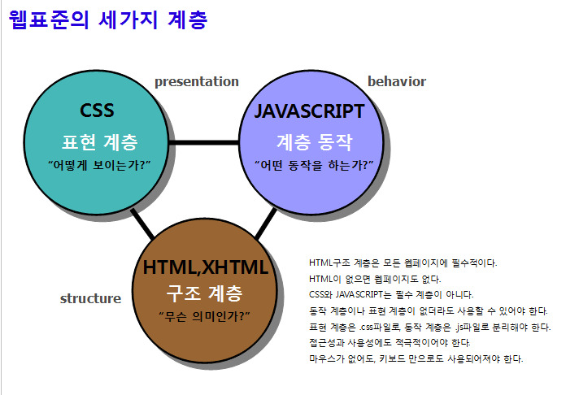
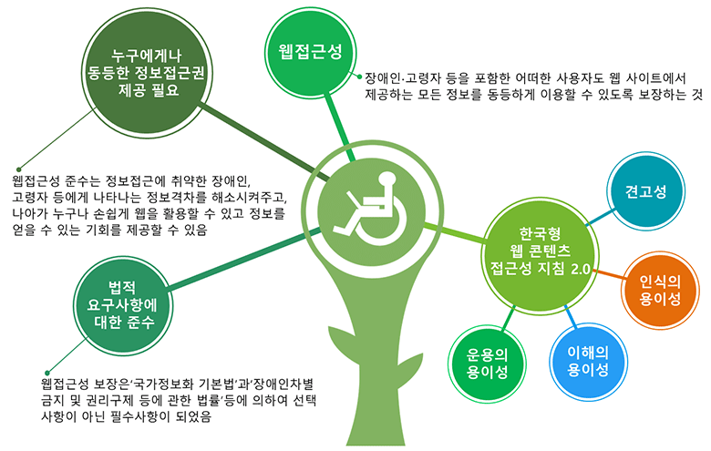

웹 표준은 월드 와이드 웹의 측면을 서술하고 정의하는 공식 표준이나 다른 기술 규격을 가리키는 일반적인 용어이다.최근에 이 용어는 웹 사이트를 작성하는 데 중요도가 높아지고 있으며 웹 디자인, 개발과 관계가 있다. 수많은 상호 의존성이 있는 표준들과 규격들 가운데 일부는 단지 월드 와이드 웹으로만 끝나는 것이 아니라, 인터넷의 관리 측면이기도 하며 이러한 표준들은 직간접적으로 웹 사이트, 웹 서비스 개발과 관리에 영향을 주고 있다. 이러한 것들 모두 "웹 표준"이라고 부르지만 웹 표준으로 이동하는 것을 찬성하는 사람들은 사용성과 접근성에 직접 영향을 미치는 더 높은 수준의 표준에 초점을 두는 경향이 있다.
산업표준이 왜 존재하는지, 도량형이 왜 존재하는지 생각해 보면 이유가 명확해진다. 산업현장에서 부품들의 표준화가 돼 있지 않으면 업체마다 서로 호환이 되지 않고, 같은 업체에서 생산하는 부품도 품질보장이 되질 않을 것이다. 웹 환경은 본질적으로 '통신'이기 때문에 더욱 더 표준화가 중요해진다. 비표준 '부품'이야 자기네 제품에만 독점적으로 사용할 거라면 크게 상관없지만 웹은 누가 어떤 장치를 어떤 방식으로 사용할지를 제공자가 통제할 수 없기 때문이다.
W3C의 정의에 의하면 웹 표준성은 접근성, 사생활 보호, 보안, 국제화의 측면을 고려해야 한다. 이 중에 접근성을 흔히 '웹접근성'이라고 하고 웹 표준성과 함께 많이 언급되는 개념이다. 웹접근성은 장애 여부에 상관없이 누구나 원활하게 웹페이지를 이용할 수 있어야 한다는 것을 의미한다.웹접근성은 장애 여부에 상관없이 누구나 원활하게 웹페이지를 이용할 수 있어야 한다는 것을 의미한다.
1.1. 텍스트가 아닌 콘텐츠가 있을 경우 이를 텍스트로 이루어진 대체 콘텐츠와 함께 제공해야 한다. 이는 대체 콘텐츠를 확대된 이미지, 점자, 음성 메시지, 기호, 더 간단한 언어로 바꾸어 필요한 사람에게 전달하기 위해서이다. 1.1.1. 텍스트가 아닌 콘텐츠: 텍스트가 아닌 콘텐츠는 동일한 목적을 수행하는 대체 텍스트와 함께 제공돼야 한다.
네이버에서 '널리'라는 프로젝트의 일환으로 네이버 사옥 그린팩토리 2층에 '웹접근성 체험 부스'를 오픈했다. 이 곳에 방문하면 누구나 무료로 실제 장애가 있는 경우 어떤 식으로 인터넷을 이용하는지 직접 체험해 볼 수 있다고 한다.
예를 들어 시각장애인의 경우 화면을 눈으로 볼 수 없기 때문에 그렇지 않은 사람과 같은 방식으로는 웹페이지를 이용할 수 없다. 그래서 '스크린 리더'라는 별도의 소프트웨어를 컴퓨터에 설치해서 인터넷을 이용한다. 스크린 리더는 모니터에 비춰지는 내용을 인식해서 음성, 점자로 출력해주는 역할을 한다.메뉴'라고 텍스트로 집어 넣지 않고 메뉴라고 그려진 이미지를 사용하면 비 시각 장애인의 눈에는 똑같이 메뉴라고 보이지만 소프트웨어 입장에서는 그저 이미지일 뿐이다. 그 이미지 안에 그려진 내용을 인식하는 것은 불가능하다. 그래서 되도록이면 이미지를 사용하지 말고 소스 코드에 내용을 그대로 담는 것이 권장되며, 부득이하게 이미지를 사용할 경우 반드시 이 이미지가 어떤 내용인지 설명을 추가해야 한다. 시각장애인은 이를 이용해 눈으로 보는 대신 소리로 들으면서 웹페이지에 담긴 정보를 이해할 수 있다.
하지만 스크린 리더는 소프트웨어에 불과하므로 스스로 웹페이지의 내용을 분석해서 이건 무슨 내용이고 저건 무슨 내용이다라는 걸 이해할 수 없다. 특히 이미지의 경우가 그렇다. '메뉴'라고 텍스트로 집어 넣지 않고 메뉴라고 그려진 이미지를 사용하면 비 시각 장애인의 눈에는 똑같이 메뉴라고 보이지만 소프트웨어 입장에서는 그저 이미지일 뿐이다. 그 이미지 안에 그려진 내용을 인식하는 것은 불가능하다. 그래서 되도록이면 이미지를 사용하지 말고 소스 코드에 내용을 그대로 담는 것이 권장되며, 부득이하게 이미지를 사용할 경우 반드시 이 이미지가 어떤 내용인지 설명을 추가해야 한다.